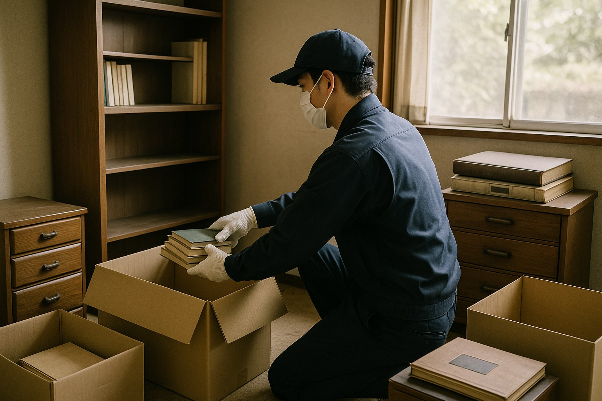

遺品整理は売却や賃貸活用の前提として、多くの空き家オーナーが最初に直面する作業です
実家が空き家になったとき、多くのオーナー様が最初に直面するのが「中の荷物をどうするか」という問題です。思い出の品を整理する精神的な負担に加え、量が多いと作業だけで数週間かかることもあります。この記事では、遺品整理・生前整理の進め方と費用の目安を解説します。
遺品整理と生前整理の違い
遺品整理は、亡くなった方の持ち物を相続人が整理する作業を指します。一方生前整理は、本人が元気なうちに自分の持ち物を整理しておくことです。生前整理を済ませておくと、相続後の遺品整理の負担を大きく減らせるため、近年は元気なうちから取り組むオーナー様も増えています。
自分で行うか、業者に依頼するか
荷物の量が少なく、時間に余裕がある場合は家族での整理も可能です。ただし、鹿児島市・薩摩川内市・霧島市・姶良市など離れた場所に実家がある場合、何度も通って作業する時間的・体力的な負担は小さくありません。
荷物量が多い、遠方に住んでいる、体力的に難しいといった事情がある場合は、遺品整理業者への依頼が現実的な選択肢になります。
| 間取りの目安 | 費用相場 |
|---|---|
| 1K・1DK | 3万円〜8万円程度 |
| 2DK・2LDK | 8万円〜20万円程度 |
| 3LDK以上の戸建て | 20万円〜50万円程度 |
荷物量・立地・買取可能な品の有無によって金額は変動します。複数社から見積もりを取り、作業内容と料金の内訳を比較することをおすすめします。
業者選びで確認すべきポイント
- 見積もりの内訳が明確か（追加料金の条件も確認する）
- 一般廃棄物収集運搬の許可を持っているか
- 買取査定を同時に行い、費用から差し引いてくれるか
- 貴重品・重要書類の取り扱い方針が明確か
- 作業実績や口コミが確認できるか
供養が必要な品の扱い
仏壇・位牌・人形など、そのまま処分することに抵抗がある品については、菩提寺や専門業者による「お焚き上げ」「魂抜き（閉眼供養）」に対応してもらえる場合があります。遺品整理業者を選ぶ際、こうした供養サービスの有無も確認しておくと安心です。
整理後の空き家をどうするか
遺品整理が終わった後は、空き家をどう活用・処分するかという次の課題が控えています。売却するのか、賃貸に出すのか、それとも当面は管理を続けるのか――整理と並行して方針を検討しておくと、その後の手続きがスムーズです。